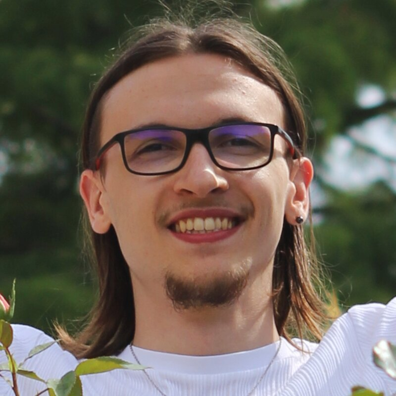
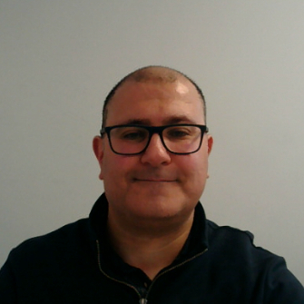
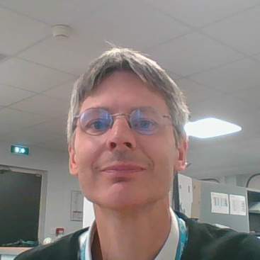
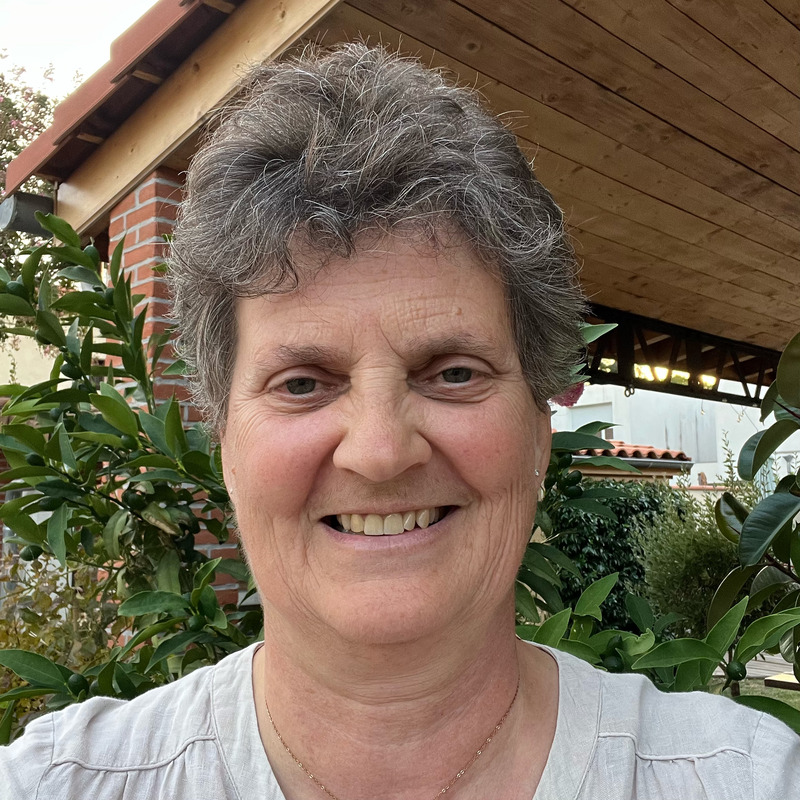

Étudiant en ingénierie à l'ENSEEIHT de Toulouse, au sein du département 3EA (Électrotechnique, Énergie Électrique et Automatique), je me suis formé au préalable en classe préparatoire PSI au lycée Joliot Curie. Ce parcours sélectif m'a permis de développer une rigueur scientifique solide et d'être admissible aux concours CCINP et Mines Télécom. Cette double culture, alliant la profondeur théorique de la CPGE à la dimension appliquée de la formation d'ingénieur, constitue aujourd'hui le socle de ma démarche académique et professionnelle.
Mon expérience la plus marquante reste la création, en solitaire et sur une année complète, d'un jeu vidéo sur Roblox. Ce projet de longue haleine, mené de bout en bout — de la conception au développement jusqu'à la diffusion — a attiré plus de 2 000 utilisateurs. Affronter seul les obstacles techniques, maintenir la motivation sur la durée et itérer sans relâche face aux problématiques rencontrées a considérablement renforcé ma résilience et mon autonomie. Par ailleurs, mon TIPE, réalisé en binôme, portait sur la dépollution des sites par l'utilisation de détecteurs de métaux, un projet d'électrotechnique qui m'a initié aux enjeux concrets du traitement des sols pollués et au travail d'équipe en contexte scientifique.
Je souhaite m'orienter vers le rétrofit de machines dans le milieu industriel : donner une seconde vie aux équipements en les modernisant, en améliorant leur performance, leur sûreté de fonctionnement et leur efficacité énergétique. Mon objectif est de contribuer à la transition industrielle en accompagnant les entreprises dans la modernisation de leurs parcs machines, un domaine d' avenir au cœur des enjeux de compétitivité et de transition écologique de l'industrie française et européenne.
Mes convictions professionnelles s'articulent autour de la préservation des ressources et de l'optimisation des systèmes existants. Je suis convaincu qu'il est plus pertinent, tant sur le plan environnemental qu'économique, de valoriser et moderniser ce qui existe déjà plutôt que de tout remplacer. La sécurité, qu' elle soit celle des personnes, des installations ou des process, est pour moi une exigence non négociable qui doit guider toute démarche d'ingénierie. Ces valeurs nourrissent une vision de l'industrie résolument tournée vers la modernisation raisonnée et durable.
Voir CV Français Voir CV Anglais Vidéo de présentationL'objectif était de crée un jeu nommé "S.N.A.I.L." collaboratif, immersif et complet pour les utilisateurs. J'ai appris durant plus d'1an à surmonter les problèmes algorithmiques, à structurer modulairement du code, et à manager un projet de A à Z en respectant un cahier des charges. +2000 utilisateurs ont expérimenté le jeu.
L'objectif était d'identifier la famille de différents échantillon de métaux issus de terrains à nettoyer afin d'extraire les métaux de famille non souhaitée. L'étude s'est concentré sur l'analyse de 3 familles de métaux : les ferromagnétiques, les diamagnétiques et les paramagnétiques. Ainsi, j'ai appris à collaborer sur un projet, à concevoir un circuit électrique, à prélever un signal avec un oscilloscope et à réaliser un diagramme de Bode. De plus j'ai codé en Python et à utilisé le logiciel FEMM.

System & Project Manager
Chargé du bon fonctionnement d'une usine en Isère chez HEXCEL FIBERS. Il s'occupe de la modification d'automates, d'interfaces homme-machine (HMI) et de la maintenance des systèmes de contrôle de commande. Il suit l'ensemble des investissements de l'usine et s'occupe de la relation entre fournisseur et client.
L'échange m'a permis de comprendre l'importance de l'anglais et de la logique, le déroulement complet d'un projet de rétrofit ainsi que la nécéssité de se spécialiser sur un type de machine dans le cadre du rétrofit.
Rapport de rencontre

Responsable d'offre Groupe Turbo Alternateur
Il s'occupe de la réception des cahiers des charges de ses clients, les réajuste en fonction des précisions à apporter. Principalement en bureau d'étude pour vendre le modèle de groupe turbo alternateur le plus adapté, Il s'occupe également de la poser et de vérifier son bon fonctionnement. Il a pu travaillé sur un projet de modernisation d'une usine d'incinération d'ordures qui avait des installations agées de 20 à 30 ans.
J'ai compris la différence entre revamping et rétrofit et il m'a fait comprendre qu'il faut garder sa capactité à trouver une information par soi-même à l'aire de l'IA. De plus, selon lui la curiosité est l'élément clé de la réussite.
Rapport de rencontre

Ancienne directrice de Airbus
Durant ses 30 années d'expériences chez Airbus, elle est devenue responsable industrielle de la chaîne d'assemblage final de l'A380 et de l'assemblage final des avions de la gamme A320. Elle apporte un éclairage industriel concret sur des sujets comme l'organisation de la production, la supply chain ou la gestion d'organisations industrielles complexes.
Cette échange m'a permis de comprendre l'importance des softs-skills pour évoluer et ajouter de la plus value aux interactions humaines : clé pour avancer et réussir. Oser prendre contact avec l'autre autour d'un café permet d'en en apprendre plus et de développer son réseau . De plus, selon elle il faut exercer un métier qui nous motive.
Rapport de rencontre
Bilatéral - Génie électrique (système énergétique)
Ce semestre à l'Ho Chi Minh City University of Technology complètera ma formation 3EA de l'ENSEEIHT par une spécialisation en systèmes énergétiques, directement liée à mon projet en génie électrique. Le Vietnam, pays en forte croissance industrielle, offre un cadre concret pour étudier l'efficacité énergétique des systèmes, une composante clé de la modernisation des équipements. Cette mobilité hors d'Europe me fera gagner en autonomie et en adaptabilité, des qualités essentielles pour ma future carrière d'ingénieur. En un semestre, elle apporte une perspective internationale à mon parcours sans le détourner de sa trajectoire.
Erasmus - Electrical engineering
Ce semestre à l'University of Ljubljana complètera ma formation 3EA de l'ENSEEIHT par une approche européenne de premier plan en génie électrique. La Slovénie, reconnue pour son expertise en réseaux électriques et énergies, offre un cadre académique de qualité aligné sur mes enseignements actuels. C'est l'occasion de confronter ma formation à une autre méthodologie européenne, dans un pays où la transition énergétique est un enjeu structurant. Cette expérience renforcerait mon profil international en cohérence avec mon projet de carrière en génie électrique.
Erasmus - 714 Electronics and automation
Ce semestre à l'University of West Attica complètera ma formation 3EA de l'ENSEEIHT par un focus sur l'électronique et l'automatique, deux piliers de mon département. L'automatique est au cœur du contrôle des machines, une compétence directement utile à mon projet de modernisation des équipements industriels. La Grèce, avec son tissu industriel en mutation, offre un cadre pertinent pour étudier ces systèmes en conditions réelles. Cette mobilité courte et structurée renforcerait mon autonomie et mon profil international sans dévier de ma trajectoire.
Depuis 2026, je suis bénévole à la ressourcerie "La Glanerie" à Toulouse ce qui m'aligne sur la valeur de la préservation de matière. J'opère dans le grand atelier où je suis en charge de trier, nettoyer, mettre à prix des objets de décoration interieur et extérieur. Je fais également de la mise en rayon dans la boutique où je mets en valeur les objets. Cette expérience renforce ma communication notamment avec une équipe ayant une mixité sociale.
Sur les années 2022 et 2023, j'ai participé aux "Courses contre la faim". Le but de ces évenements est de lever un maximum de fond pour reduire l’insécurité nutritionnelle dans le monde. Elles ont eu lieu au lycée de l'Elorn en Bretagne et ont levé 45 000€ sur les 2 années.
2023-2024 : 🏐 Pratique du volleyball pendant un an au sein de l'association sportive du lycée de l'Elorn : coordination collective, communication en situation de jeu et entraide au service d'un objectif commun — développement de l'esprit d'équipe et de la réactivité dans un cadre structuré.
2025-2026 : 🏃🏻🏋️♀️ Pratique hebdomadaire de la musculation et de la course à pied sur une année scolaire : régularité de l'entraînement, progression mesurée et dépassement de soi — engagement dans la durée et discipline appliquées à l'effort physique comme à la rigueur personnelle.
2025-Présent : 🍳 Pratique quotidienne de la cuisine salée et pratique hebdomadaire de la cuisine sucrée : expérimentation de recettes, adaptation des techniques et du dosage — démarche d'essai-erreur et d'amélioration continue appliquée hors du cadre technique. (Plats Asiatiques & Européens, tarte amandine, croissant, cookies, crumble...)
Détenteur du Permis B
""""""""""""""""""""""""" """""""""""""""""""""""